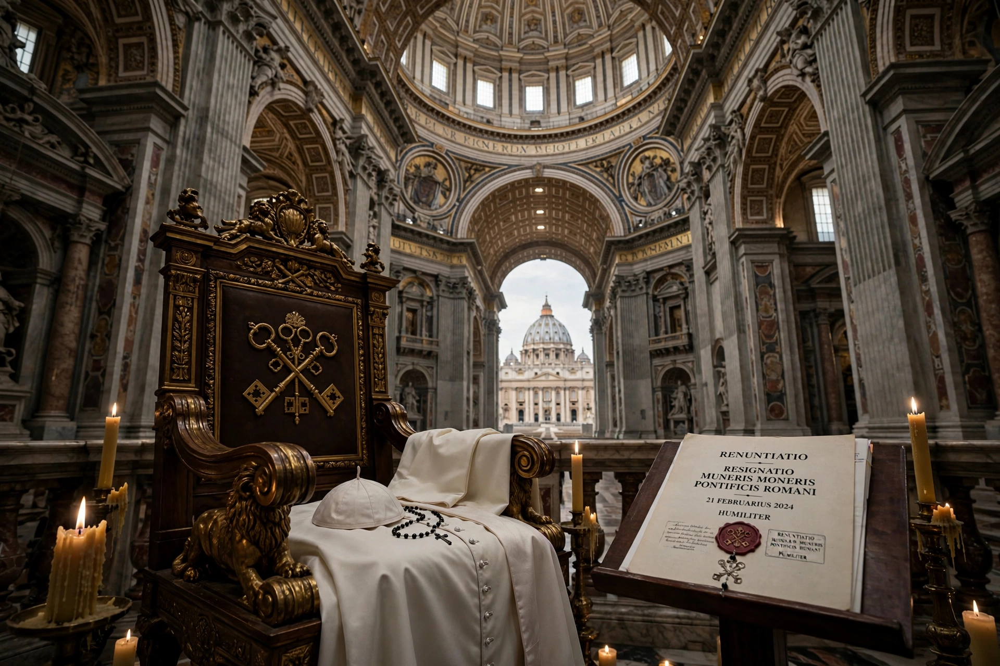

A papal resignation (Latin: renuntiatio) is the act by which the pope, the bishop of Rome and head of the Catholic Church, voluntarily steps down. Canon 332 §2 of the Code of Canon Law states that a pope may resign, provided the resignation is freely made and properly manifested, and need not be accepted by anyone.

Resignations have been rare. Notable cases include Benedict IX (1045, amid scandal), Celestine V (1294, a hermit-pope who issued a decree confirming a pope's right to resign), and Gregory XII (1415, to end the Western Schism under the Council of Constance). On 11 February 2013, Benedict XVI announced his resignation effective 28 February 2013, citing advanced age and declining strength — the first resignation in nearly 600 years. He took the title pope emeritus.
Upon a resignation taking effect, the See becomes vacant (sede vacante) and the College of Cardinals convenes a conclave to elect a successor in the usual way.
See also: Sedevacantism